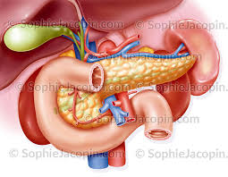

La
lithiase biliaire est caracterisee par la formation de calculs dans les
voies biliaires.
Les
calculs sont des concretions pierreuses formees par des matieres qui
sont normalement en solution dans l'organisme.

Physiopathologie
Les voies
biliaires sont constituees par les canaux hepatiques droits et gauches
qui se regroupent dans le canal hepatique commun formant le canal
choledoque.
La
vesicule biliaire sert e stocker la bile et l'evacue au moment des
repas.
La bile
secretee par le foie sert e transformer les graisses (cholesterol) en
tres petites particules. Le cholesterol est normalement e l'etat
soluble pendant le transport, il a besoin d'eau. C'est l'absence d'eau
qui est responsable de la formation des calculs.
Video de la vesicule
biliaire
e Docteur Richard
Martzolff Encyclopedie medicale Vulgaris
Examens
effectues
Bilan
biologique :
NFS : verifier l'etat infectieux.
CRP : augmente lors d'un terrain
infectieux ou inflammatoire (norme : < 30).
Bilan hepatique :
GOT.
CTP.
Phosphate alcaline.
Gamma-GT.
Amylase-Lipase : voir si retentissement
hepatique.
Bilirubine totale et conjuguee.
TP-TCK, plaquette.
Echographie
du foie et voies biliaires.
Scanner
abdominale : verifier si le pancreas est sain et signes de
pancreatite biliaire et verifier si la paroi vesiculaire epaissie.
Cholangiographie
intraveineuse : injection d'un produit opaque.
Cholangio-Pancreatographie-Retrogarde-Endoscopique
(CPRE) : examen qui permet d'opacifier les voies biliaires et qui peut
permettre l'ablation d'un calcul.
Sphincterotomie
: on ouvre au niveau du sphincter d'Oddi (orifice oe le canal
choledoque s'ouvre dans le duodenum) pour retirer le calcul.
Surveillance du transit : sonde
gastrique enleve lors de la presence de gaz.
Surveillance de la pompe e morphine
contrelee (PCA), etre vigilant quand le patient dort.
Surveillance de la frequence
respiratoire : si tres basse, antidote de la morphine : Naloxone.
Complications
Saignement.
Ileus paralytique : intestin endormit,
il se coince et le patient peut se mettre en occlusion.
Peritonite biliaire.
Abces sous phrenique.
Soins
infirmiers aux patients porteurs
d'un drain de Kehr
Le drain
de Kehr est un drain en caoutchouc en forme de T qui est place dans le
choledoque qui evacue la bile vers l'exterieur lors d'une intervention
chirurgicale sur la voie biliaire principale.
Indications
Eviter l'ictere (jaunisse) par retention
de bile.
Faciliter la cicatrisation en evacuant
la bile et eviter l'apparition d'œdemes.
Soins infirmiers en post-operatoire
Surveillance post-operatoire : voie
d'abord veineuse, drain de Kehr, sonde gastrique en aspiration.
Le drain ne soit pas etre coude sinon
risque d'engorgement.
Surveillance de l'ecoulement, en moyenne
250 e 500 ml/j.
Si sueur, surveillance de la temperature
et en tenir compte pour les pertes hydriques.
Noter aspect, odeur de la bile.
Surveillance du ionogramme car dans la
bile il y a du bicarbonate qui sert e alcaliner le bol alimentaire. Il
y a ici, une perte importante de bile donc de bicarbonate.
Soins de confort : bien installer,
soulager douleur (position antalgique), soins de bouche.
Lever precoce.
Bonne antisepsie de la region pour le
pansement que l'on refait tous les 3 jours.
Si le patient arrive jaune, surveiller
la concentration des urines (urines foncees = mal hydrate) et peuvent
contenir des pigments biliaires.
Surveillance des selles : si selles
blanches cela veut dire que la bile ne passe pas encore bien dans le
circuit, c'est e dire qu'il doit y avoir un obstacle, un œdeme.
Entre J4-J7,
drain clamper : surveillance fievre, frisson, douleur, couleur des
teguments.
Radiographie de contrele vers J7.
Pas de douche, ni de bain si presence de
drain.
Ablation du drain vers J21.
Complication
Dues au clampage : fievre, douleur,
ictere.
Hemorragie post-operatoire qui peut etre
exteriorisee ou non. Surveillance hemodynamique.
Cholerragie (ecoulement de bile) : la
bile s'ecoule dans le drain de Kehr normalement. Mais si elle s'ecoule
dans le drain sous-hepatique, ce n'est pas normal.

 haut
de page
haut
de page